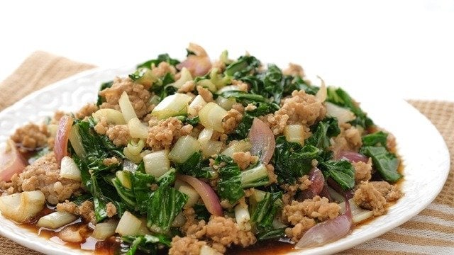

Dobby's Pechay Giniling

Description
A recipe that is most beloved in the Bat-og-Angeles household. This has been a frequently-cooked dish as it evokes memories from Dobby's elementary days, when he first made this dish from home-grown Pechay plants
Ingredients
- 3-4 bundles of Pechay plants
- 1/4kg ground pork
- 1 piece red onion
- 4 cloves of garlic
- Soy Sauce
- Cooking Oil
- Maggi Magic Sarap
Steps
- Prepare the ingredients for stir-fry by mincing the onions and garlic. Slice the Pechay plants crosswise to create the noodly shape of the leaves.
- Sautee the minced garlic and onions.
- Once the garlic is golden brown, add the ground pork. Stir-fry until the ground pork is cooked (white-golden brown appearance.)
- Add soy sauce and stir-fry until the soy sauce has seeped into the meat.
- Add water until meat is submerged. Add salt, pepper, and Magic Sarap to taste.
- Once preferred taste has been achieved, add the sliced Pechay leaves.
- Let dish boil until the Pechay leaves are cooked. Adjust by adding salt or pepper to taste.
Return to Homepage